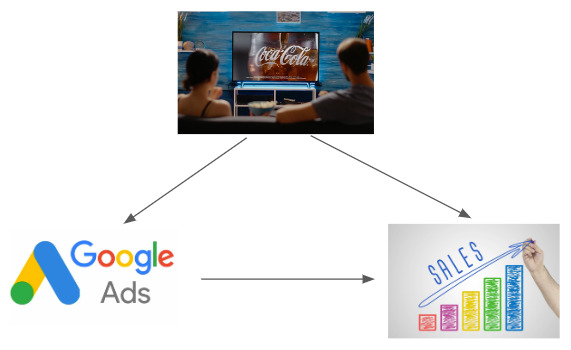
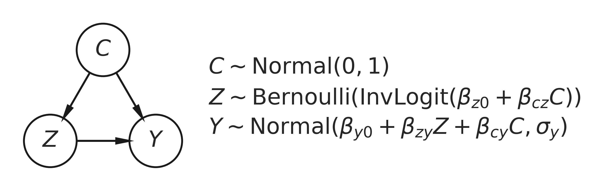
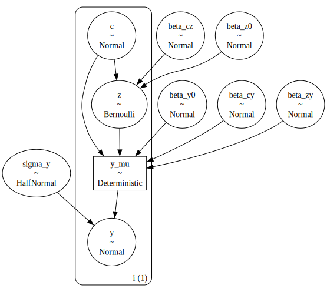
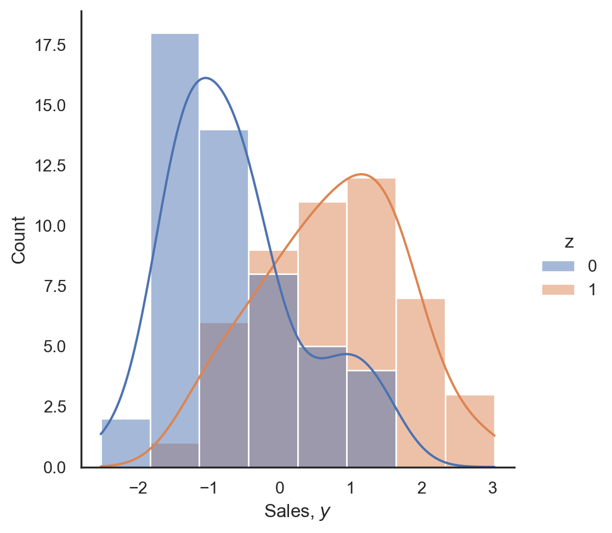
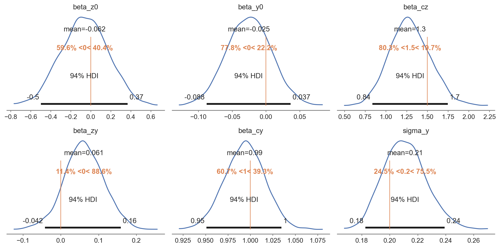
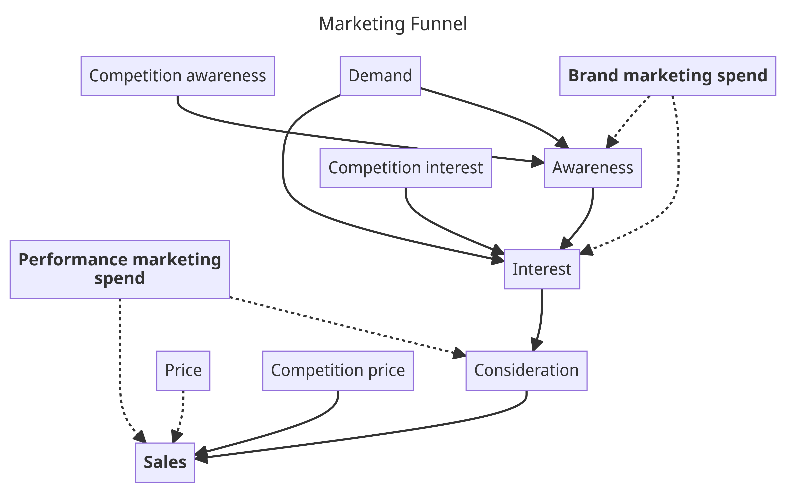

Causal analysis is rapidly gaining popularity, but why?
Without a causal understanding of the world, it's often impossible to identify which actions lead to a desired outcome. For example, if you wanted to cool down on a hot summer day, you would not put your thermometer into an ice bath to make the temperature go down. The obvious reason is that you know that the temperature affects the thermometer, but not the other way around.
In business, we are constantly taking actions to achieve a certain outcome (e.g. increase sales). So in order not to waste our time heating our proverbial thermometer, we need a solid understanding of the causal relationships underlying our business processes. This is the premise of Decision Intelligence.
Machine learning methods might help us predict what's going to happen with great accuracy, but what's the value of that if it doesn't tell us what to do to achieve a desirable outcome.
Causal analysis is often embedded in a frequentist framework, which comes with some well-documented baggage (see e.g. Scientists rise up against statistical significance).
It is sometimes claimed that Bayesian statistics does not allow for causal analysis. However, as we will demonstrate in this blog post, this is wrong. Combining these two fields provides many benefits over traditional causal analysis.
PyMC is a mature and highly scalable Python package for building Bayesian models using an approachable syntax. Rather than invent new frameworks for performing structural causal analysis, we can super-charge PyMC for Bayesian Causal Analysis with a powerful feature: the new do operator.
Note that we are specifically focusing on Structural Causal Modeling here, rather than e.g. quasi-experimentation which is the focus of packages like CausalPy.
In sum, there are several advantages compared to more traditional frequentist causal inference approaches:
import arviz as az import daft import matplotlib.pyplot as plt import numpy as np import pandas as pd import pymc as pm import pytensor as pt import seaborn as sns from packaging import version
# check we have the required versions assert version.parse(pm.__version__) >= version.parse("5.8.0")
# import the new functionality from pymc import do, observe
SEED = 42
The marketing team of our e-commerce company comes to us with a simple request: Estimate the effectiveness of the paid Google search ads in driving sales.
Pretty simple, right? We just correlate how much we're spending on search ads with our sales volume. If we wanted to get fancy, we could use a Bayesian Marketing-Mix Model or train a machine-learning model for this.
There is just one complication: unbeknownst to us, the marketing team is also running TV ad campaigns. In order to maximize the impact of the TV ads, the marketing team is turning Google search ads on when TV ads are active, but when there are no TV campaigns, Google Ads are turned off to save on marketing budget.
Thus our situation looks actually like this:

In causal inference terms, we're dealing with a confounder -- TV influences both: sales and Google ad spend. This is potentially highly problematic, because it's totally possible that it only looks like Google Ads increase sales, but that this effect is completely driven by the TV ads increasing search volume and that there is in fact no causal effect of Google Ads on sales.
This example illustrates well why we really care about making causal claims about our data. Who cares if Google ad spend is correlated with sales or is very predictive, what we really want to know is what actions we should take to increase sales.
We can represent the above example with an idiomatic causal directed acyclic graph (DAG) where we have a binary treatment variable $Z$ (Google Ads on/off) which may or may not causally influence an outcome $Y$ (sales). However, this relationship suffers from confounding by $C$ (TV) which causally influences both treatment and outcome. Further, we turn this into a Bayesian causal DAG by specifying probabilistic causal relationships between the nodes. A prior is placed on $C$ as it has no parent nodes.

As you can see, we are essentially setting up two regressions: a logistic regression of $C$ on $Z$, and a linear regression of $C$ and $Z$ on $Y$, all with the appropriate intercepts and regression coefficients.
Because our main relationship of interest here is between the treatment $Z$ and the outcome $Y$, we can see that this example corresponds to the idiomatic confounded relationship.
Our goal in this example is to establish the strength of the $Z \rightarrow Y$ causal relationship, expressed as parameter $\beta_{ZY}$. Assuming this is an accurate and complete causal story of our data (a big assumption!) we can quantify the uplift on sales that is caused by paid search.
Note that in this blog post we assume we already know the causal graph. Where that is not the case, we need to look towards methods of causal discovery.
Before we dive in to the code, let's specify some notation to make life a bit simpler:
This next step may seem slightly alien to many existing PyMC users. We are going to define an 'empty' model, not conditioned on any data at all. This can be thought of as a 'pure' description of our data generating process, totally divorced from any actual data.
with pm.Model(coords_mutable={"i": [0]}) as model_generative: # priors on Y <- C -> Z beta_y0 = pm.Normal("beta_y0") beta_cy = pm.Normal("beta_cy") beta_cz = pm.Normal("beta_cz") # priors on Z -> Y causal path beta_z0 = pm.Normal("beta_z0") beta_zy = pm.Normal("beta_zy") # observation noise on Y sigma_y = pm.HalfNormal("sigma_y") # core nodes and causal relationships c = pm.Normal("c", mu=0, sigma=1, dims="i") z = pm.Bernoulli("z", p=pm.invlogit(beta_z0 + beta_cz * c), dims="i") y_mu = pm.Deterministic("y_mu", beta_y0 + (beta_zy * z) + (beta_cy * c), dims="i") y = pm.Normal("y", mu=y_mu, sigma=sigma_y, dims="i") pm.model_to_graphviz(model_generative)

Having defined the full joint distribution, we are first going to use it to generate simulated data with known causal effect sizes, to then test if we can recover them.
In order to do that, we are going to specify some true parameter values that govern the causal relationships between nodes. Importantly, we will set the true causal influence of $Z$ upon $Y$ to be equal to 0, that is $\beta_{zy}=0$. This is known as the true Average Treatment Effect (ATE). If you recall our real-world example, this would correspond to Google Ads having no causal effect on sales.
Of course, in real-world situations we will not know what the true ATE is. We only know it here because we are simulating the data and know the ground truth. Our goal is to estimate what the ATE is, and testing how well we can infer known parameters from the data alone (an excercise called Parameter Recovery) is a very useful excercise. If we can't recover the parameters in a simple toy simulated world, then we shouldn't have much faith that we can estimate the true effects in more complex real-world dataset.
While there are other ways to do this, here we will use the new do operator to generate a new model with the parameters set to certain values.
true_ATE = 0.0 true_values = { "beta_z0": 0.0, "beta_y0": 0.0, "beta_cz": 1.5, "beta_zy": true_ATE, "beta_cy": 1.0, "sigma_y": 0.2, } model_simulate = do(model_generative, true_values)
Let's unpack this a little bit. The do-function takes a pymc.Model object and a dict of parameter values. It then returns a new model where the original random variables (RVs) have been converted to constant nodes taking on the specified values.
But we're just warming up here, a bit further below, we'll see a much cooler application of the do-operator.
Next, we'll sample from this new model to obtain samples from distibution $P(C, Z, Y | \theta)$. Note that we'll use pm.sample_prior_predictive (not pm.sample because we are not doing any inference).
N = 100 with model_simulate: simulate = pm.sample_prior_predictive(samples=N, random_seed=SEED) observed = { "c": simulate.prior["c"].values.flatten(), "y": simulate.prior["y"].values.flatten(), "z": simulate.prior["z"].values.flatten(), } df = pd.DataFrame(observed).sort_values("c", ascending=False)
If we just did the basic analysis of what our sales ($y$) look like based on Google Ads being turned on ($z=1$) or off ($z=0$), then it looks like there's a big difference:
ax = sns.displot(data=df, x="y", hue="z", kde=True) ax.set(xlabel="Sales, $y$");

We could further confirm a significant effect of Google Ads on sales using a t-test or Bayesian significance test but will skip that for now as it's fairly obvious that there is a large difference between the two groups.
The key point is that in our setup, while it looks like Google Ads has a big (positive) influence on sales, there is actually no underlying causal effect between them. The difference we see is entirely driven by the TV confounder.
Let's next turn to inference. For that, we could just redefine the above model and use the observed kwarg as is common in PyMC.
However, we can do something a bit cooler than that and use another new function called observe(). This function takes a model and data, and returns a new model with the data set as observed on our target RV, similar to the do() function.
Importantly, we want to derive this observed model from our original "empty" model_generative from above, so that no parameters are fixed in place.
model_inference = observe(model_generative, {"c": df["c"], "y": df["y"], "z": df["z"]}) model_inference.set_dim("i", N, coord_values=np.arange(N))
Now we can press the Inference Button(TM) and sample from our posterior as if we had defined our model in the classic way.
with model_inference: idata = pm.sample(random_seed=SEED)
We can inspect our posterior distributions using arviz. By plotting the known parameter values we used to generate the simulated data, we can confirm that the inference step has done a good job of estimating these values.
az.plot_posterior( idata, var_names=list(true_values.keys()), ref_val=list(true_values.values()), figsize=(12, 6), ) plt.tight_layout();

So far we've simply demonstrated that the generative model we wrote can do a good job of recovering the parameters based on data which was generated directly from that data generating process. This can be a very valuable excercise and represents a new Bayesian workflow for those interested in parameter recovery studies. But let's not get distracted by this and return to our causal focus.
do operator. 🔥Now we are ready for the coolest use case for the do operator -- doing counterfactual reasoning! This is where we're asking "What if?": What if we stopped Google Ads? What if we increased spending on Google Ads? What would we expect our data to look like in these scenarios?
Critically, these hypothetical interventions remove any influence of TV on Google Ads, because the assumption is that we turn Google Ads on and off irrespective of what TV is doing. This is the logic behind the do operator.
Once we have these two hypotheticals, we estimate the thing we're really interested in: How strong is the causal influence of Google Ads on sales, independent of the TV confounder?
For those familiar with causal inference, you'll know this as the Average Treatment Effect:
$$ ATE = P(Y | c, do(z=1)) - P(Y | c, do(z=0)) $$
To achieve this in PyMC, we can use the do() function again to generate the counterfactual scenarios as explained above. However, before diving in with something like the following:
model_z0 = do(model_inference, {"z": np.zeros(N, dtype="int32")})
First, we have to replace the TV RV c with its observed data df["C"] so that it doesn't get resampled later.
# Replace c with its observed values model_counterfactual = do(model_inference, {"c": df["c"]})
Now we are able to use the do() operator to set all the values of $Z$ to either 0 or 1 to calculate $P(Y | c, do(z=0))$ and $P(Y | c, do(z=1))$, respectively.
# Generate models with Z=0 and Z=1 model_z0 = do(model_counterfactual, {"z": np.zeros(N, dtype="int32")}, prune_vars=True) model_z1 = do(model_counterfactual, {"z": np.ones(N, dtype="int32")}, prune_vars=True)
This gives us our two What-If models. As we are interested in what data we would expect to observe under these hypothetical scenarios, we next need to simulate new data for both models.
This is done using our trusted pm.sample_posterior_predictive() function which generates new data for given a model and a posterior inference trace (i.e. the idata from above when we fit the model to data containing the posteriors of our estimated regression coefficients).
# Sample new sales data assuming Google Ads off: P(Y | c, do(z=0)) idata_z0 = pm.sample_posterior_predictive( idata, model=model_z0, predictions=True, var_names=["y_mu"], random_seed=SEED, ) # Sample new sales data assuming Google Ads on: P(Y | c, do(z=1)) idata_z1 = pm.sample_posterior_predictive( idata, model=model_z1, predictions=True, var_names=["y_mu"], random_seed=SEED, )
Given this hypothetical sales data from the two simulated interventions, we can compute the difference in sales between Google Ads on and off to give us the estimated Average Treatment Effect:
# calculate estimated ATE ATE_est = idata_z1.predictions - idata_z0.predictions print(f"Estimated ATE = {ATE_est.y_mu.mean().values:.2f}")
Estimated ATE = 0.06
We get a small but positive ATE. If we didn't know any better, we might be tempted to say that there is indeed a small causal effect of Google Ads on sales.
Fortunately, as the good Bayesians that we are, we know to be weary of point-estimates and always look at the full distribution of outcomes.
So is the causal impact of Google Ads on sales large or small? There are many ways we could go about answering this question but here we'll calculate the size of the causal effect of Google Ads on sales ($Z \rightarrow Y$) as a percentage of the causal effect of TV advertising on sales ($C \rightarrow Y$).
percent = (idata.posterior["beta_zy"] / idata.posterior["beta_cy"]) * 100 print( f"Causal effect of Google Ads on sales is {percent.mean():.1f}% [{az.hdi(percent).x.data[0]:.1f}%,{az.hdi(percent).x.data[1]:.1f}%] of the effect of TV on sales" )
Causal effect of Google Ads on sales is 6.2% [-4.1%, 16.5%] of the effect of TV on sales
Despite a positive point-estimate of the ATE, we maybe don't conclude that the effect of Google Ads on sales is that high, if there is one at all.
As this example has hopefully demonstrated, Bayesian statistics is the perfect framework for doing causal analysis, and the do operator is an enormously helpful tool.
In this blog post we have used an example from marketing analytics to show how easy it is to get fooled by correlation. While it clearly looked like Google Ads were increasing sales, this difference was entirely driven by the TV confounder. This insight became quite obvious when we simulated data under two hypothetical interventions: manually turning Google Ads on and off (which removed the influence of TV on Google Ads).
If we hadn't taken a causal approach, we might have well told the marketing team that increasing Google Ad spend is a good way to boost sales.
In addition, we have shown how even with a causal approach, it is easy to get fooled by randomness. As we're always estimating causal effects from data, point estimates give us no sense of uncertainty. By embedding our causal analysis in a Bayesian framework we are able to use probabilities to quantify how certain we are of there being a causal effect.
Causal models can be easily expressed in PyMC. We simply implement the Data Generating Process and hit the Inference Button. Combined with the newly added do() operator, we are able to simulate interventions that take causality as well as uncertainty into account.
Confounders are a big concern, especially in marketing analytics. While the example used here is realistic, it's definitely also quite simplistic. Usually we would consider not just two marketing channels, but many. In that case, the story becomes more complex, but we still can leverage our understanding of underlying causal structure: marketing channels higher up the funnel are more for brand-building and exhibit longer-term effects, while lower-funnel channels have more direct short-term effects.
Here is a diagram that illustrates this idea: 
As you can see, higher-funnel brand marketing spend (e.g. TV) is building awareness which drives interest which ultimately creates sales. Lower-funnel performance marketing spend (e.g. paid search ads) has a more direct influence on sales. Notably, we have all kinds of other factors and confounders as well here we can include as well. For example, we know that price plays a big role on sales, so this allows us to bridge MMMs with price elasticity modeling.
Other real-world effects can be included as well, like channel saturation and delay (adstock) effects. Including these effects into our model turns it into the well-known Media Mix Model (MMM) which we've done a lot of work on at PyMC Labs, such as adding time-varying parameters. This work culminated into releasing an open-source package to put Bayesian MMMs and customer lifetime value models in PyMC at your fingertips: https://www.pymc-marketing.io.
If this of interest to you, we have built a causal full-funnel Bayesian MMM that includes price-elasticity and are excited to show it around. Get in touch, we are looking forward to hearing from you.
If we want to make better decisions, we need a solid understanding of how our actions affect outcomes. This is the domain of causal analysis.
If we don't want to be fooled by the randomness in our data, we need to know how confident we are in our results. This is the domain of Bayesian statistics.
Combining these two gives us a very powerful framework for doing data science that provides actual business value. As we leave the domain of pure associations or predictions, we stop merely providing insight into what has happened or will happen, but also what to do to maximize chances of a favorable outcome. We enter the domain of Decision Intelligence.
With the new functionality presented here, PyMC emerges as a powerful tool to aid in this endeavour.
If you are hungry for even more detail, we've got you covered!
CausalPy, a package we put together for causal inference in situations, built on top of PyMC (also see our video from PyData Global 2022 about this topic).If you are interested in seeing what we at PyMC Labs can do for you, then please email info@pymc-labs.com. We work with companies at a variety of scales and with varying levels of existing modeling capacity. We also run corporate workshop training events and can provide sessions ranging from introduction to Bayes to more advanced topics.